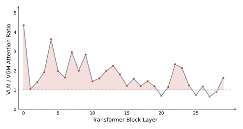
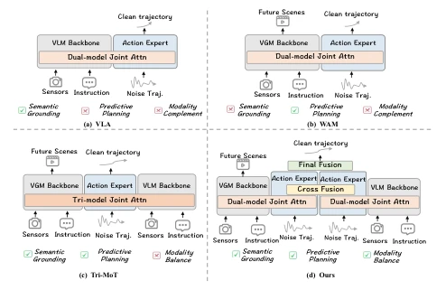
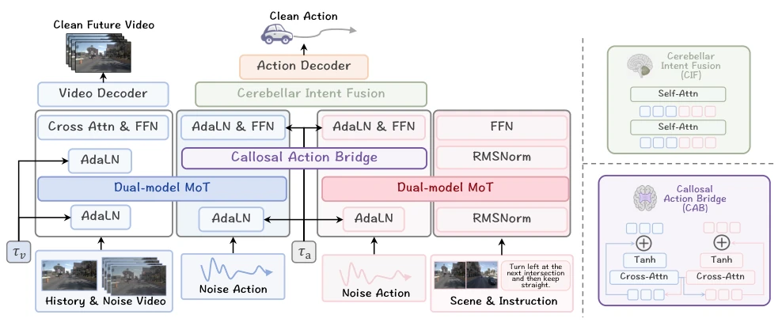
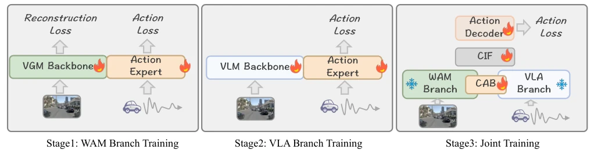
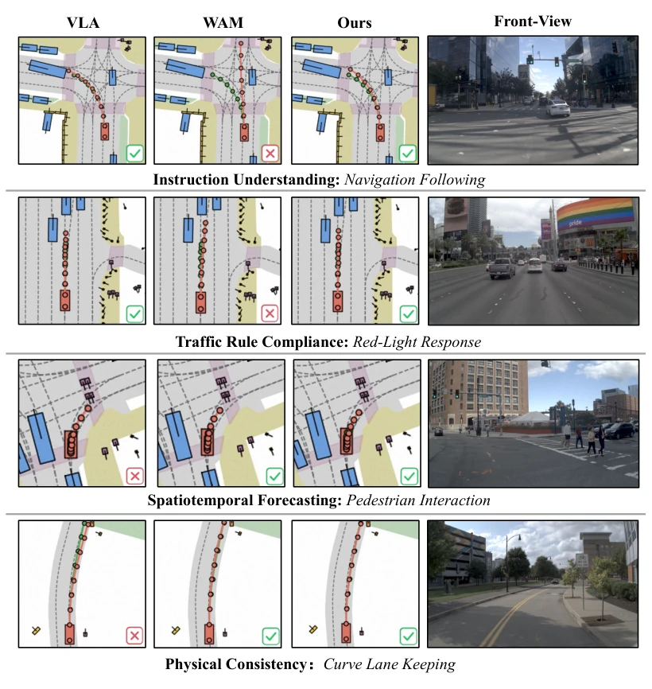
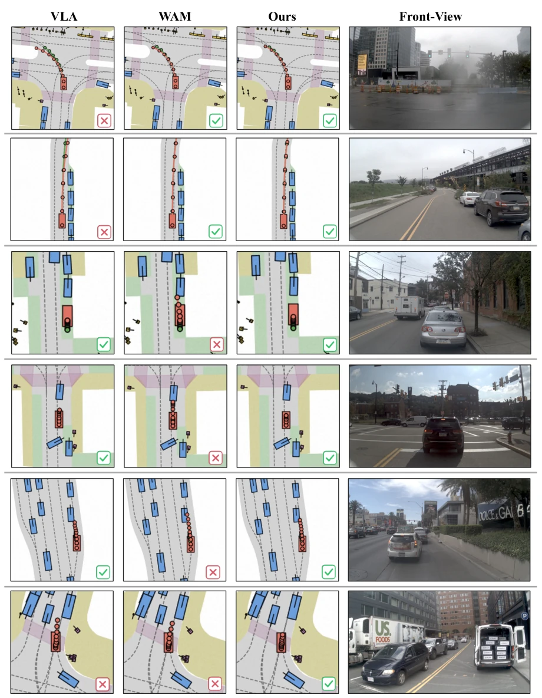

这篇论文给自动驾驶“大脑”做了个左右脑分工手术。VLA 懂规则但不懂未来，WAM 懂未来但不懂交规，硬凑一起（Tri-MoT）就乱套，语义信号把预测信号压死了。作者搞了个 BrainWAM，模仿人脑，左右脑各管各的，最后通过“胼胝体”（CAB）和“小脑”（CIF）在动作空间握手。结果 NAVSIM 上确实稳，但模型复杂度蹭蹭涨，推理延迟也上去了。算是给多模态融合开了个新路子，不过“脑科学”比喻是不是有点过度包装？反正数据好看，Li Auto 和 CASIA 联手，这波不亏。
This paper performs a left-right brain division surgery on the autonomous driving "brain". VLA understands rules but not the future, while WAM understands the future but not traffic regulations. Forcing them together (Tri-MoT) leads to chaos, where semantic signals suppress prediction signals. The authors developed BrainWAM, mimicking the human brain, with left and right brains managing separately, finally shaking hands in the action space through the "corpus callosum" (CAB) and "cerebellum" (CIF). The results on NAVSIM are indeed stable, but model complexity skyrockets, and inference latency also increases. This counts as opening a new path for multimodal fusion, though whether the "neuroscience" metaphor is a bit over-packaged is questionable. Anyway, the data looks good, with Li Auto and CASIA joining hands, this move is not a loss.
Autonomous driving requires semantic constraints (rules) and predictive dynamics (future evolution). Existing VLA models (e.g., ReCogDrive [Li et al. 2025e]) excel at semantic reasoning but lack future scene modeling; WAM models (e.g., DriveDreamer [Wang et al. 2024]) excel at prediction but have weak rule awareness. Direct fusion (Tri-MoT) suffers from attention allocation mismatch: Action tokens tend to focus on clean VLM semantic tokens, while ignoring VGM video tokens undergoing denoising, leading to suppressed prediction capability. This is akin to letting a person who knows traffic rules and a person who knows physics argue directly, finally listening to the one with the louder voice. A mechanism is needed to coordinate them at the action level, rather than fighting hard at the token level.

Figure 2: Attention allocation in Tri-MoT. We compare atten- tion ratios of action tokens to VLM and VGM tokens across layers. Action tokens attend more strongly to VLM tokens than to VGM tokens across most Transformer layers, reveal- ing semantic dominance in joint representation space.

Figure 1: Comparison of different paradigms in autonomous driving. (a) VLA leverages vision-language priors for task- aware semantic grounding but lacks explicit predictive plan- ning. (b) WAM captures future scene evolution but has lim- ited semantic grounding. (c) Tri-MoT jointly fuses VLM, VGM, and action tokens in a shared raw-token space, which may cause attention interference. (d) Our method separates se- mantic and predictive pathways and coordinates them in the action space. VGM: Video Generation Model.
The overall process is divided into three stages of training. Stage 1 trains the WAM branch, using a video generation backbone (Wan2.2) to predict future videos and action vector fields, learning prediction grounded representations. Stage 2 trains the VLA branch, using a VLM (Qwen3-VL) to extract semantics and convert them into action representations, learning semantic grounded representations. Stage 3 freezes the branches and trains the coordination module. The core innovation is action space coordination: 1. Callosal Action Bridge (CAB): mimics the corpus callosum, using bidirectional cross-attention to connect the two action flows, avoiding mixing of original tokens and preventing semantic tokens from suppressing prediction tokens. 2. Cerebellar Intent Fusion (CIF): mimics the cerebellum, fusing the two flows to generate the final trajectory, decoding into an executable trajectory. 3. Asynchronous Denoising: video and action use independent rectified-flow time steps; video early stopping is used to save latency while retaining prediction context. This design avoids attention suppression of prediction tokens by semantic tokens, ensures prediction context is not drowned by semantic shortcuts, and achieves complementarity.

Figure 3: Overview of the proposed semantic-predictive action architecture. The VLA pathway distills scene semantics, route instructions, and rule-aware priors into semantic-grounded action tokens, while the WAM pathway distills future dynamics and physical priors into prediction-grounded action tokens. Instead of mixing raw VLM and VGM tokens in a shared attention space, CAB bridges the two action streams, and CIF fuses the refined action intents for trajectory decoding.

Figure 4: Three-stage training pipeline. Stage 1 trains the WAM branch with video and action rectified-flow objectives, enabling the action expert to learn prediction-grounded representations from future scene modeling. Stage 2 trains the VLA branch with visual and language inputs, converting VLM semantic cues into action representations. Stage 3 freezes both branches and optimizes CAB, CIF, and the action decoder for joint trajectory generation.
Evaluated on NAVSIM v1 and v2. Metrics include PDMS and EPDMS. Baselines include traditional end-to-end (TransFuser), VLA (DriveVLA-W0), and WAM (DriveDreamer-Policy). BrainWAM achieved 89.5 PDMS on v1 and 89.6 EPDMS on v2, reaching SOTA. Ablation studies show Tri-MoT only achieved 87.8 PDMS, lower than WAM-only, proving direct fusion ineffective. The combination of CAB and CIF yields significant improvements. Video denoising steps range from 0 to 3; 1 step recovers most performance, while 3 steps increase latency with limited gains. Qualitative analysis shows superiority over single-branch models in navigation, traffic light, and interaction scenarios.

Figure 5: Qualitative comparison of VLA-only, WAM-only, and Ours in representative scenarios. Ours produces robust trajectories under semantic constraints and dynamic interactions by combining the two pathways at the action-token level.

Figure 6: Additional qualitative comparisons among VLA-only, WAM-only, and BrainWAM. Each row presents the predicted trajectory in the BEV representation and the corresponding front-view image. The first two rows show cases where WAM-only succeeds while VLA-only fails, whereas Rows 3–5 show the opposite. In the last row, both single-branch models fail, while BrainWAM still produces a reasonable trajectory. These examples demonstrate the complementary strengths of semantic priors and predictive dynamics, as well as the effectiveness of their action-space coordination in BrainWAM.